MovER: Stabilize Decentralized Finance System with Practical Risk Management
Abstract — Decentralized Finance has been more popular and the main development direction of Blockchain. However, more and more financial risks come to light, threatening blockchain system security seriously. In this paper, we propose a novel and stable decentralized financial system based on the modern risk management and evaluation. From basic economics perspective, the system consists of a diversified collateral framework, stability mechanism and clearing system. We also introduce risk bonds to deal with Black Swan. A brand-new onchain modern finance should be constructed on the modern risk management models and theories. MovER builds a strong all-round risk control framework based on Markov Chain, Loss Distribution and Volatility Forecasting, etc. The risk framework can evaluate all three kinds of risks, market risk, credit risk and operational risk.
Index Terms — DeFi, Blockchain, Stablecoin, Risk Management, Volatility, JLT Model
1. Introduction
A cross-chain blockchain ecosystem not only includes "crossing" but also "connecting" all kinds of cryptocurrency assets. The prosperity of a decentralized financial system is inseparable from the construction of various onchain financial infrastructures, from trading to lending, from pricing to clearing, from medium of exchange to store of value, etc. So it has far-reaching significance for a cross-chain financial system to build a unified stablecoin system and clearing infrastructure on the basis of diversified high value digital assets.
Currently, stablecoins are mostly based on digital assets collateral. There are also well-known USDT-like offshore digital stablecoins that directly nest the balance sheet of the real financial system, promising a full amount of fiat currency liquidity reserve and 100\% reserve mechanism. Even some stablecoin projects that stay in the theoretical stage are committed to building an algorithmic central bank based on the quantity theory of money. The first two are far superior comparing with the third in terms of issuing mechanism, stability control, and application scenarios. MovER belongs to the first kind of stablecoin system. And its design considers the balance sheet, qualified collateral, liabilities and equity, the stability mechanism and risk transfer, and unique ecological scenarios.
More importantly, the risks of financial industry generally come from market risks, credit risks and operational risks. Such risks also apply to the prospering onchain financial system. We should build the complex economic system under the control of modern risk management theory and model, otherwise it will suffer a lot of serious security attack until crash. For all we know, modern risk management is missing from current stablecoin and DeFi systems. MovER may be the first decentralized financial system based on classic probability theories and modern financial risk management models, introducing JLT model, LDA, volatility models and VaR calculation. And the setting of all key system parameters needs to be established under the guidance of these models to form an all-round and all-weather risk measurement system based on the trinity of Experience, Data and Model.
2. StableCoin System Overview
2.1. Qualified Collateral Framework
Cross-chain protocol provides a diversified source of qualified mortgage assets for the collateral framework, such as BTC, ETH, etc. We choose four types of digital assets which have different liquidity risks and market risks, and the correlation risks among them should not be high. The four types of assets are independently mortgaged, making their risks isolated. Haircut rate is an important tool to evaluate assets risk loss, which can follow traditional VaR (Value-at-Risk) calculation. However, taking into account the unique law of value and instantaneous high fluctuation characteristics of the cryptocurrency assets trading market, new factors should be added into the formula, such as the clearing liquidity of mortgage assets. Efficient clearing liquidation can help the system to respond to market risks as quickly as possible. The ideal combination is definitely the stable market volatility with split-second clearing liquidity. We evaluate the clearing proportion, clearing rate and market depth of each asset under different market fluctuations, meanwhile define the clearing liquidity factor, which combined with VaR calculation to form the Liquidation Mortgage Rate (LMR) calculation.
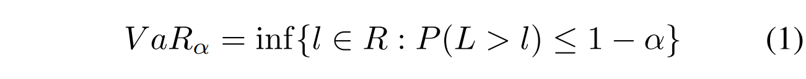
The confidence interval is α ∈ (0, 1), the probability of loss L exceeding the minimum value l does not exceed (1 ∞ α)
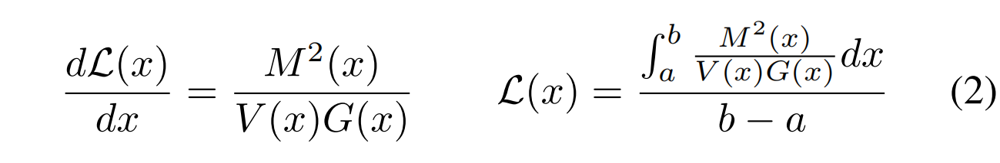
L(x) represents the calculation function of the clearing liquidity factor in the interval [a, b] under the influence of the market volatility variable x, related with the clearing rate V , the clearing proportion M, and the current market affordability (the ratio between the total amount to be liquidated to the market depth G without causing much price fluctuation).
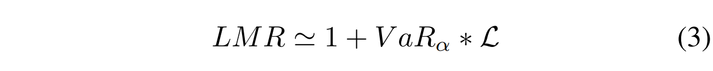
Besides LMR, the other two important system parameters are Stabilization Fee Ratio (SFR) and Liquidation Fee Ratio (LFR), which are related to system risk reserve and incentive feedback. The system revenue is used for risk reserve (Economic Capital) and incentive to all contributors in the system. Meanwhile the adjustment of SFR will also be used as a means to regulate the supply and demand of the stablecoin market.
2.2. System Roles and Architecture
The system roles are categorized as follows:
1) Loaner: participants who obtain stablecoins via mortgage.
2) Lender: participants who engaged in lending trade.
3) Third-party Clearing Arbitrage: contribute the clearing liquidity to the stablecoin system.
4) Third-party Oracle Cluster: provide real-time price feed, connecting the on-chain and off-chain.
5) Creditors: when Black Swans occur, they purchase bonds and inject confidence into the system.
6) Market Maker: provide liquidity for the lending market.
7) Application Developer: build DeFi apps and expand more innovative scenarios.
8) Stablecoin System: made up of Stablecoin Contracts, On-chain Oracle and Risk Intervention (Management) System.
9) Lending Pool: actively cooperate with the market maker mechanism to provide rich liquidity for lending market.
10) Stablecoin Lending: the lending market supports stablecoin lending services.
In Figure1, we have actively created three liquidity pools, which not only provide liquidity support for the stablecoin, but also encourage third-party applications to actively participate in the financial system.
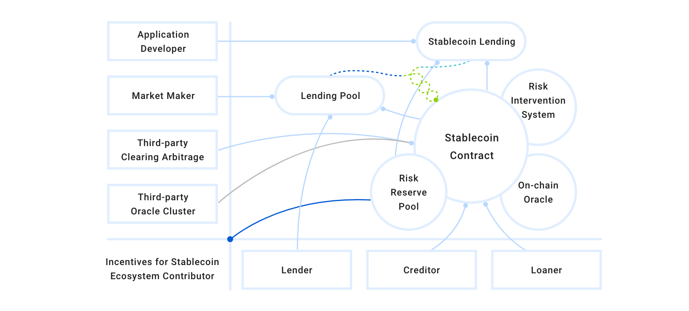
Figure 1. MovER Architecture and Composition
2.3. Stability Mechanism and Risk Liquidation
The internal stability mechanism is based on Risk Liquidation and Risk Bonds.
We set up a Three-level Clearing System:
Level 1: market arbitrage clearing. Risk is controllable. External arbitrageurs are encouraged to participate in the liquidation process, autonomously connecting the trading market;
Level 2: system global clearing. System is subject to high risks. Immediately freeze the system and let it become the largest market arbitrage liquidator;
Level 3: risk bonds clearing. Be initiated when the black swan occurs and minimize user loss through the issuance, auction, repurchase of bonds.
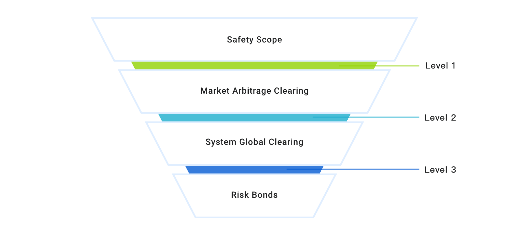
Figure 2. Three-level Clearing System
Risk Bond is a kind of credit bond issued in time of crisis to maintain stability through the absorption of liquidity to tighten supply. As the market picks up, stablecoins will be issued to repurchase bonds, and giving benefits to creditors. Risk Bond supports two types of auction mechanisms:
Debt auction: sell credit debt in an open auction to raise stablecoins, then redeem the mortgage assets.
Collateral auction: sell mortgage assets in an open auction, and repurchase risk bonds with the raised stablecoins.
3. Practical Risk Management System
Risk management is the most important module of decentralized financial systems, shouldering the responsibility of evaluating market risks and operational risks promptly and precisely. We first propose a practical risk management framework (Figure 3) suitable for blockchain financial system, consisting of external risk models and internal risk models.
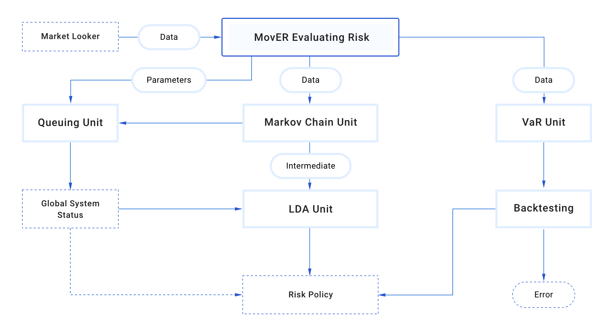
Figure 3. MovER Risk Management Framework
3.1. Internal Risk Model Based on Markov Chain
We expand the classic Jarrow-Lando-Turnbull (JLT) model[1] which is a kind of Markov chain model widely used in the field of modern financial risk control, and regard the liquidation process (default) as a finite state-space Markov chain. By integrating with modern credit risk measurement (rating) model[2], and reflecting the quality and trend of loans in the stablecoins system, help us to evaluate the whole loss distribution, and rationally adjust financial parameters.
3.1.1. Transition Matrix
The Markov chain model is very suitable for describing and predicting the risk status of the entire life cycle of a loan contract. We adopt an aperiodic time-homogeneous, continuous-time Markov chain, and first define the finite state-space:
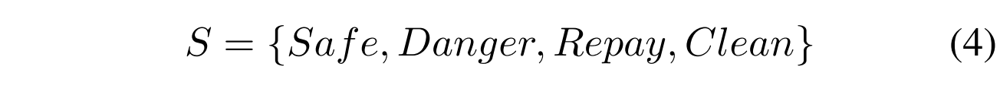
Among them, Repay (active repayment) and Clean (passive liquidation) belong to absorbing state, Safe and Danger are non-recurrent state, and stablecoin loans are in Safe state when they are created. When the real-time mortgage rate exceeds the minimum liquidation mortgage rate, it changes to Danger state. In the more complex model Danger is divided into three status: L-Danger, M-Danger, and H-Danger according to the three-level clearing system.
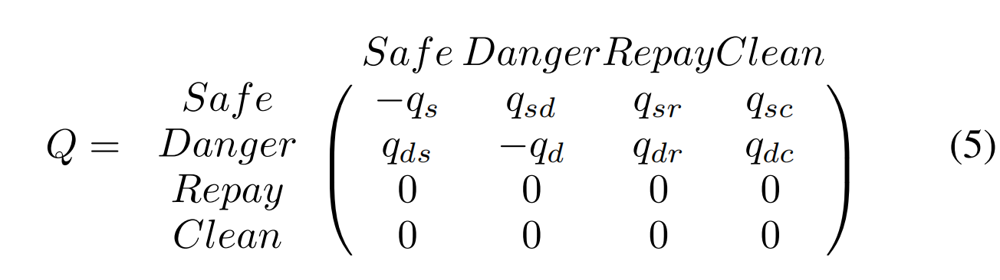 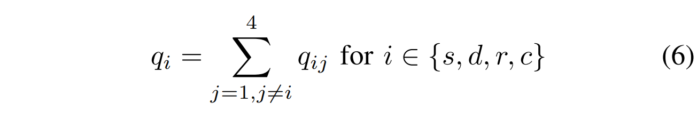 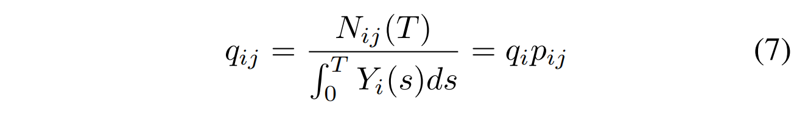 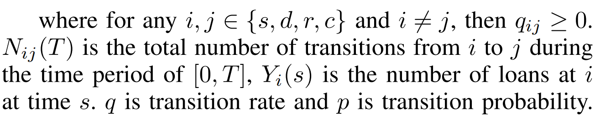
The transition probability matrix P(t) in period t can be further obtained from the generator matrix Q through the Matrix Exponential [3] which is the only solution of Kolmogorov forward and backward equations:
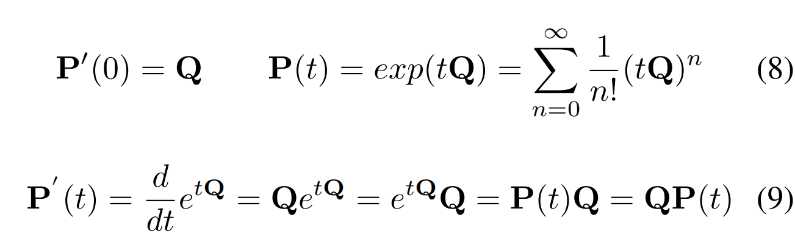
There are two kinds of absorbing state, Repay and Clean, in our state-space. Starting from the initial state Safe, which absorbing state reached after a long-term convergence is completely random, and the absorbing probability distribution depends on the initial state. Accurate estimation of absorbing time and absorbing probability helps us to grasp loans repayment and liquidation status in the system in a timely manner. First define the steady-state probability distribution, which has a great significance for exploring the potential long-term behavior (convergence) of the on-chain financial system:
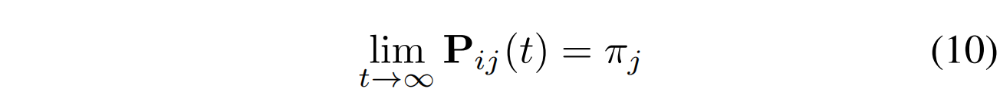
Estimate the absorbing time. Block the generator matrix (a is the set of absorbing states, T is the set of non-absorbing states, and V is a 2 × 2 matrix):
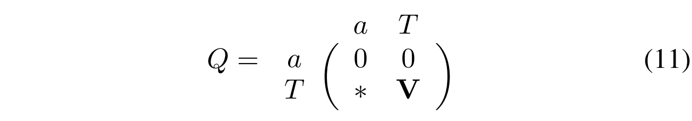
The expected time can be obtained by inverting the transition rate q, so further obtain the basic matrix F to reflect the expected absorbing time:
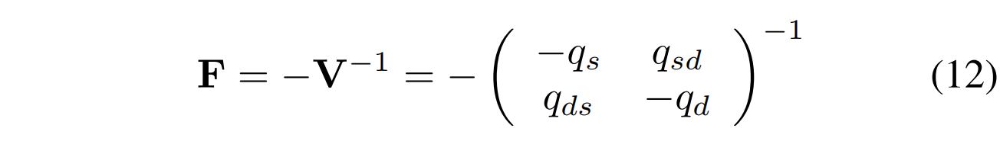
where Fij is the expected time from state i to state j to be absorbed, so the expected time from Safe state to absorbing state can be defined as:
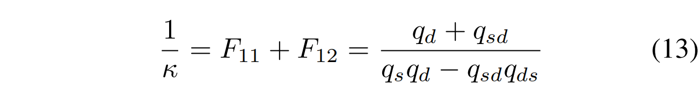
Estimate the absorbing probability. Define the initial transition probability matrix from the generation matrix:
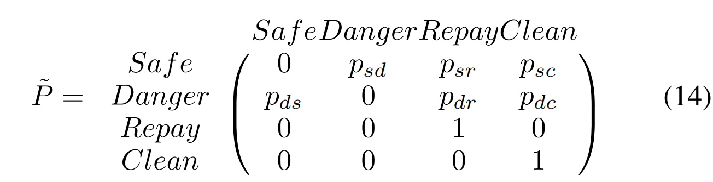
Block the matrix:
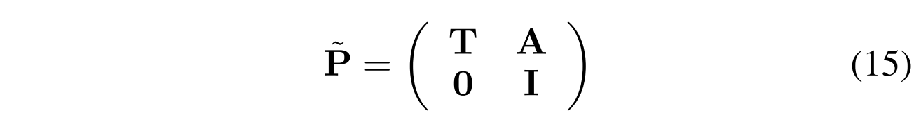
where T is the non-absorbing state matrix, A is the matrix with transitions from the non-absorbing state to the absorbing state, 0 is the zero matrix, and I is the identity matrix.
After n steps:
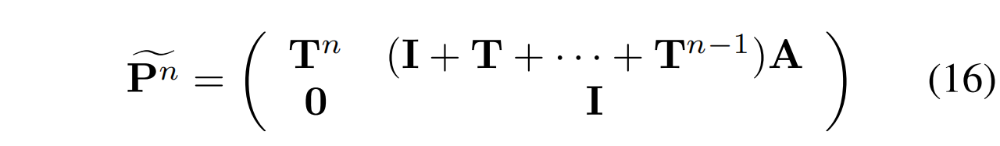
According to the steady-state probability limit distribution and properties of the absorbing Markov chain:
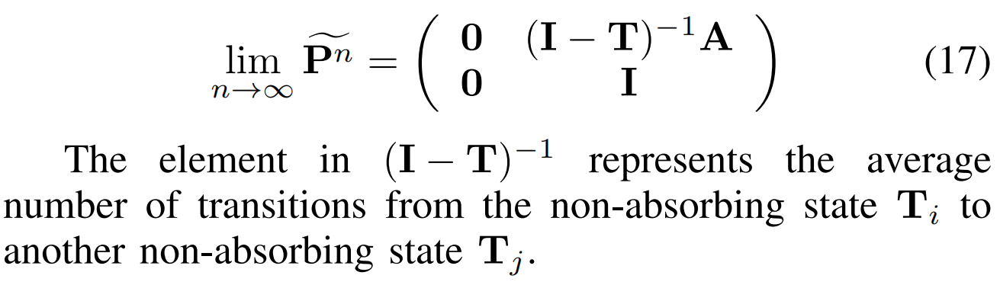 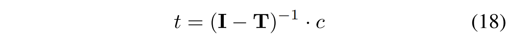
where c is a column vector with all elements 1, the i-th component of the column vector t represents the average number of transitions from the i-th non-absorbing state to a certain absorbing state. Finally, the matrix B is constructed to represent the absorbing probability from the non-absorbing state to the absorbing state:
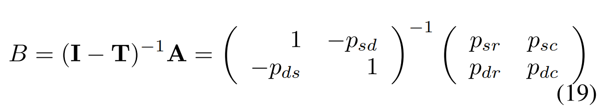 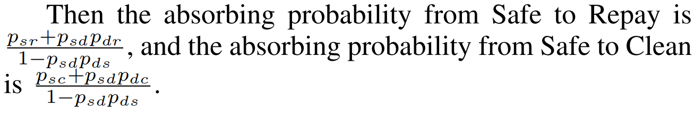
3.1.2. Queuing Theory
The stablecoin system is like a naturally growing ecosystem with births and deaths of loans. Therefore we define a birth-death process M/M/∞: birth rate λ, death rate κ, and the upper limit of the loan size.
Assuming the system is in state 0 at time 0, the probability that the system is in state j at time t is [4]:
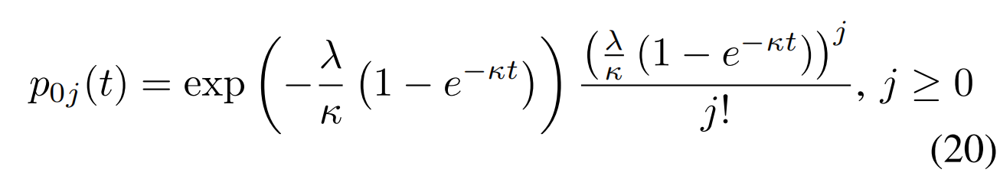
Calculate the expected queue length at time t according to the probability formula, that is the total number N(t) of loans of the system at time t:
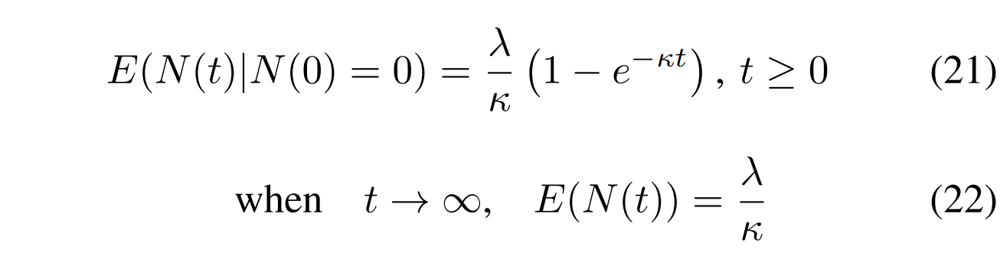
According to the expected number of loans and the absorbing probability matrix at time t, we can further predict the number Ct of loans eliminated at time t and the number NC(t) of liquidated loans:
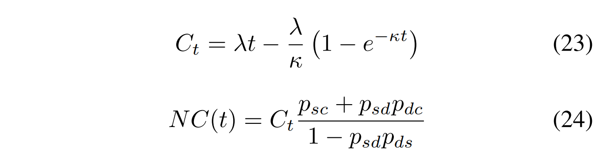
Combined with the system’s Liquidation Fee Ratio (LFR) and the expected value of each loan V , the system can predict the liquidation fee income LF(t). Similarly, based on the Stabilization Fee Ratio (SFR), the total stabilization fee income SF(t) can be predicted.
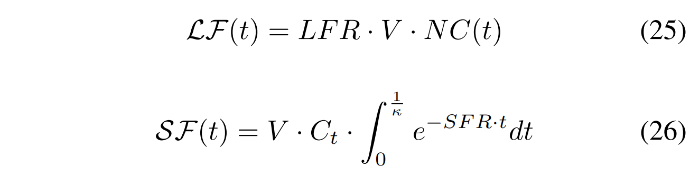
Additionally, there is a global formula:
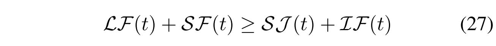
The formula says the income and expenditure balance in period t, SJ (t) is the affordable loss distribution, IF(t) represents Incentive Fee of ecosystem.
3.1.3. Loss Distribution Approach
There are four covariates in our Markov chain model: Stabilization Fee Ratio (SFR), Liquidation Mortgage Rate (LMR), collateral asset type and total loan size.
The survival analysis method of the classic disease model can effectively predict the effect of these covariates on the Markov transition matrix. The transition matrix should be appropriately deformed, and the two states Safe and Danger are merged into Open[5]. Only the transfer of Open to Repay and Clean is concerned, so it can be further reduced to the Cox Proportional-Hazards Model.
Define the hazard and survival functions of the effect of Liquidation Mortgage Rate (LMR) c(t) on the transition rate from Open to Clean:
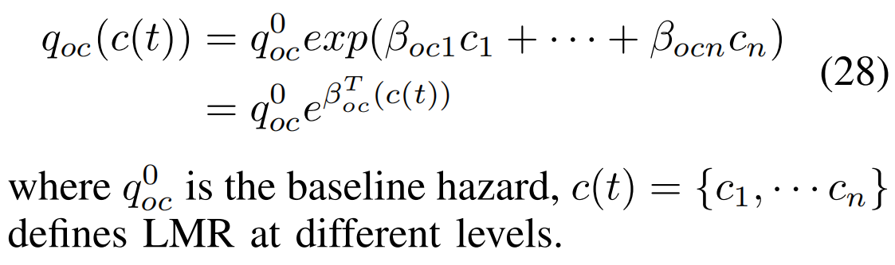 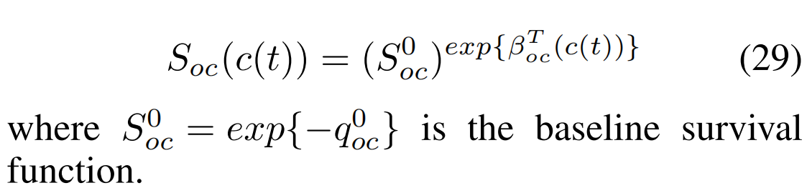
Define the hazard and survival functions of the effect of Stabilization Fee Ratio (SFR) r(t) on the transition rate from Open to Repay:
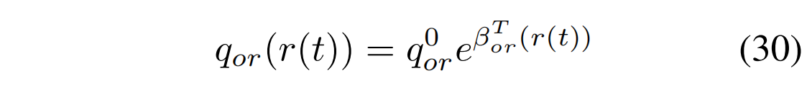 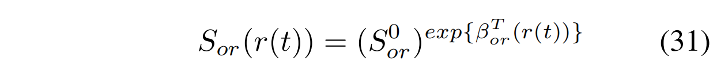
The establishment of the Cox model can quantify the impact of covariates on the rate of state transition. For example, when adjusting the SFR, it can be estimated how much loans closing rate will increase with the rise of stabilization fee.
The mortgage rate is also closely related to the default rate. In on-chain stablecoin system, a default can be regarded as a smart contract that triggers the liquidation of mortgage assets. There are different levels of default, for example, when the clearing system is fast, the system can reduce loss to the minimum. When extreme market risks occur or our financial system has a large operational risk, it often brings serious loss to the ecosystem. For the relationship between the mortgage rate and the probability of default under the influence of market risk and operational risk, a conditional loss distribution approach (LDA)[6] can be used for quantitative analysis, and it is also one of the most important theory to adjust the system minimum liquidation mortgage rate:
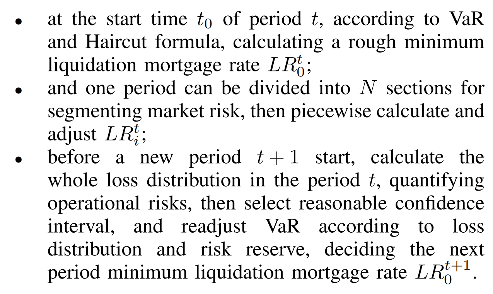
The probability of default is independent of the mortgage rate. The probability can be expressed as poc = qoc/qo. For a given number N of loans, the proportion of liquidated loans obeys a binomial distribution [7] with a success probability poc:
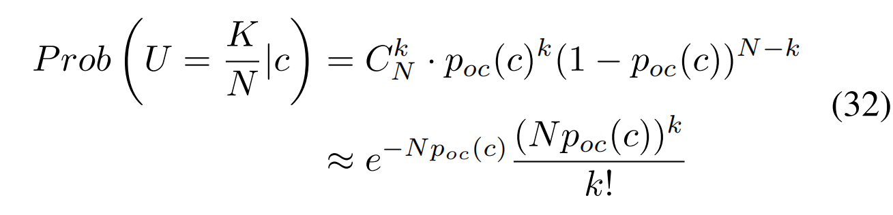
It makes approximate calculation with Poisson distribution, however, more rigorously each loan has different risk feature, so the parameter q = N poc(c) > 0 of Poisson should be a random variable, suppose it follows Gamma distribution:
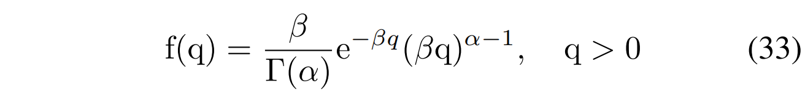
then the marginal distribution of the number K of liquidated loans:
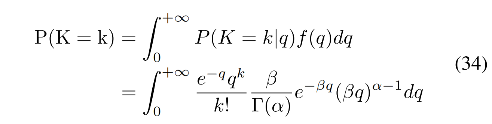
Complete loss distribution should include loss frequency distribution and loss severity distribution. The liquidation state Clean is further divided into different levels: first-level liquidation state 1-Clean, second-level liquidation state 2-Clean, third-level bond liquidation state 3-Clean and fourth-level liquidation state Loss-Clean with the mortgage rate lower than 100%. 1-Clean and 2-Clean loss distribution can reflect whether the system's clearing system is fast and the percentage of losses recovered by users. 3-Clean reflects the system's risk bond intervention, and the state Loss-Clean directly reflects the system's loss. The crypto-market's loss data has a more obvious heavy-tailed distribution, thus it is reasonable to use combination distribution (Lognormal-GPD):
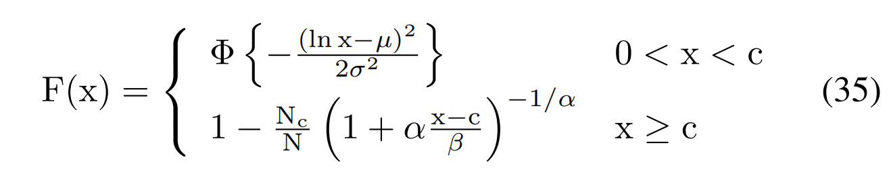
where Nc is the number of losses beyond threshold c, N is the total number of risk events, c, α, β are parameters of GPD. Using sample mean excess plot to calculate Mean Excess Function (MEF), while MEF [8] is the mean of observations which exceed the threshold c
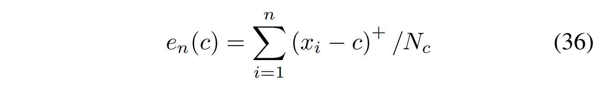 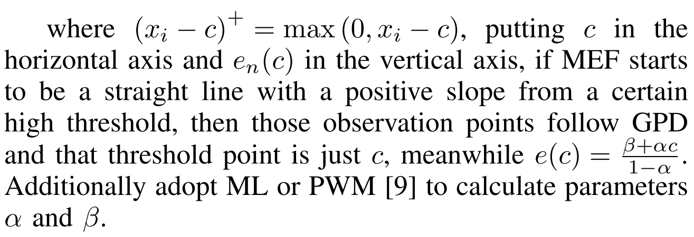 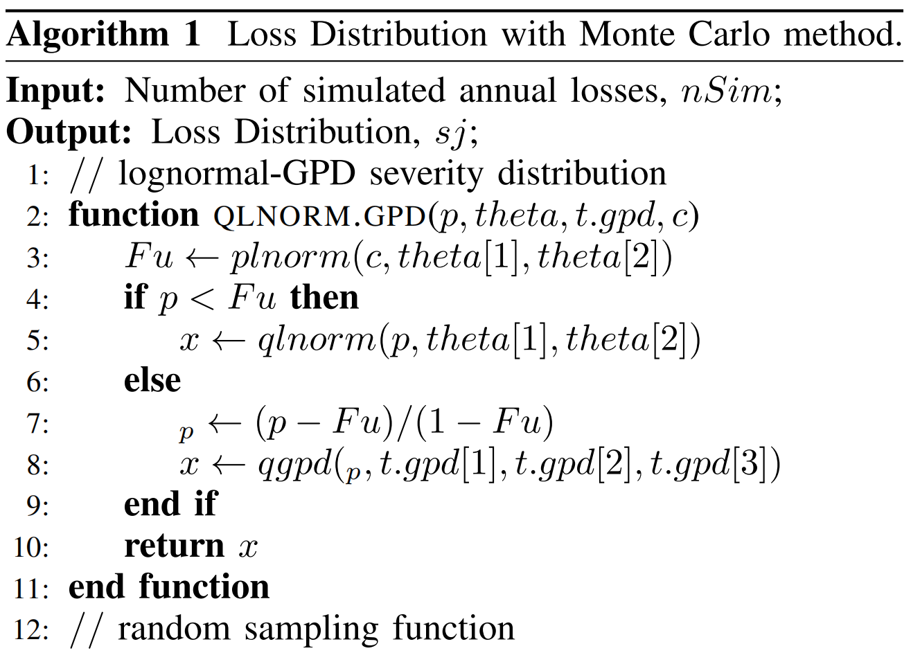 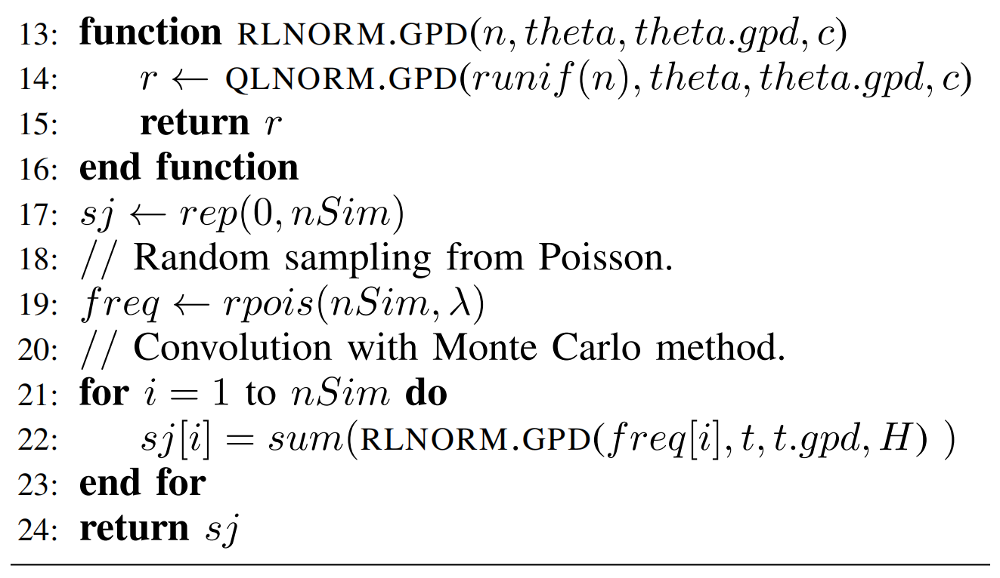
3.2. External Risk Models
We choose volatility forecasting techniques to evaluate external market risks by establishing a systematic VaR calculating and backtesting framework. As crypto-financial market presents obvious fat tails and volatility clustering[10], VaR models need to be coordinated with complex distribution or higher-order stochastic simulation methods (such as GARCH-family models and Monte Carlo simulation[11]) in order to avoid underestimating the small-probability events.
Here we expand traditional GARCH models and dig deep the suitable submodel and distribution for cypto-financial market. First, the one-step-ahead VaR is usually estimated as:
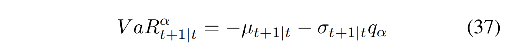
And it forecasts from GARCH models depend on the conditional mean µ, the conditional volatility σ and the quantile of the standardized residuals qα. The quantile can be either computed from the estimated model density or computed using the empirical distribution of the standardized residuals.
Considering the two significant characteristic of cryptoasset returns, drastic time-varying volatility and excess kurtosis relative to the normal distribution, we fit an ARMA time series model to our data and then use the parameters of this model for VaR prediction and GARCH time series for estimating the time-varying variance of our model [11]. In general, the ARMA(p, q)-GARCH(r, s) model is:
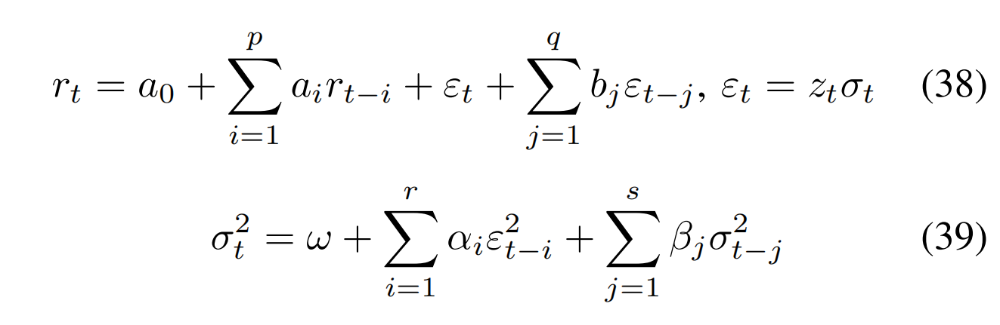
where rt represents assets returns, and normal assumption zt is found to be inadequate for sample fitting and forecasting not long after its inception, so t-distribution is adopted with its additional shape parameter and performs better than a normal model, particularly for more extreme (1% or less) VaR thresholds.
Other non-linear GARCH models, such as EGARCH and GJR-GARCH, have a good ability to reflect the market asymmetry between positive and negative volatility [12]. The EGARCH model allows positive and negative shocks to have a different impact on volatility and also allows big shocks to have a greater impact on volatility [13]. In practice, besides analysis of current market feature, we should also select the right GARCH models based on the judgement of ACF plot, AIC, BIC, MAE, MAPE and RMSE, etc.
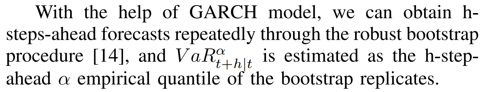
The methodology makes the forecasting results sensitive to changing market conditions and can predict losses outside the historical range. From a computational standpoint, this method is very reasonable for large portfolios and empirical evidence supports its predictive ability. It's important to point out that GARCH is only suitable for short-term forecasting especially for cypto-market. For long-term evaluation, models need to consider historical simulation, filtered historical simulation, extreme value theory and Monte Carlo VaR comprehensively. Monte Carlo simulation requires users to make assumptions about the stochastic process and it is subject to model risk. There is no one perfect and unchangeable model. Change is the essence of model methodology.
CVaR model is often used to monitor the "black swan" event, pointing out the conditional mean loss exceeds VaR, and is more sensitive to extreme risks measurement.
It should be noted that the confidence interval and holding time of VaR calculation in crypto-market is different from that in traditional financial markets. In general, the confidence interval prefers a higher value and holding time had better not exceed one month.
Every risk model needs supporting Backtesting system to verify its accuracy. The common methods are Basel framework and Kupiec's POF-test which to examine the frequency of exceptions, as well as Christoffersen’s interval forecast test and mixed Kupiec-test to study the independence of exceptions\cite{b15}. If backtesting failed, the current VaR model need to be adjusted, maybe it used a wrong distribution feature or inaccurate volatility model.
4. Evaluation
Our evaluation was divided into two parts, evaluating several main VaR calculations of BTC asset and simulating the loss distribution of the stablecoin system. We use Quandle and Catalyst to fetch historical market data, rugarch and fGarch R packages to define GARCH models, msm R package to build Markov chain model.
For calculating the VaR of Bitcoin, historical data was selected and cleaned from December 1 2017 to August 1 2019, which period contained much famous violent fluctuations, and the data from December 1 2017 to June 1 2019 was used to fit volatility modes, the data from June 1 2019 to August 1 2019 was used to help prediction and backtesting. To simulate stablecoin system behaviour, we chose the historical data of MakerDAO from August 1 2018 to June 1 2019, and mainly did survival analysis and loss distribution simulating.
4.1. Comparison of Various VaRs
An excellent volatility model should have two kinds of abilities: fit the history well and predict the future accurately. Figure (a) shows a period of GARCH historical fitting compared with actual (realized) volatility, and the model could reflect important historical fluctuation sensitively.
GARCH models generate VaR prediction via short-term rolling window forecasting\cite{b16}. Figure (b) shows volatility prediction based on EGARCH model has the upside trend in the next few days which is consistent with the reality, however, the longer rolling forecast time the worse prediction results. Therefore, we suggest the VaR prediction of GARCH models should adopt a fine-grained rolling forecast window and not obtain too many steps ahead forecasts at once. Another important calculation factor is to select accurate distribution feature for GARCH model, from Figure (c), we found t distribution suitable for BTC market data.
Figure (d) is a complete presentation of VaR effect, respectively based on 0.95 and 0.99 quantile. Obviously the higher quantile the fewer exceptions, as there are only three exceptions which are not covered by the 0.99 quantile VaR prediction in almost one year. Especially for actual violent downside fluctuation, this VaR methodology could capture successfully at the cost of a little overestimate. The frequency of VaR exceedances is called the VaR coverage. We can verify model through VaR coverage: valid prediction model has a coverage that is close to the probability level used. If too many exceedances, the predicted quantile should be more negative and risk of losing money has been underestimated.
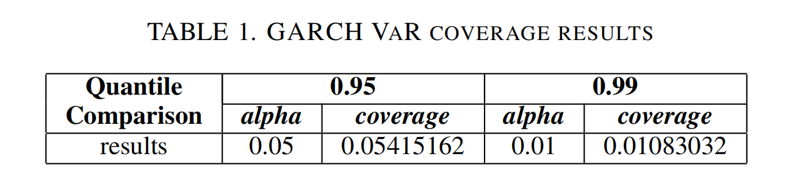
Based on all selected historical data fitting, Figure (e) gives a full VaR prediction in the future, including the lower/upper 95%-CI for the predicted VaR, and the backtesting results show "Correct Exceedances & Independent" (expected exceedances 5 and actual 5).
Besides the volatility model VaR, we also explore and compare other three kinds of main VaR calculation methodology: Historical VaR, Parametric VaR and Monte Carlo VaR (see Table 2} ). These methods are often adopted to calculate the medium and long term VaR, regarded as the auxiliary means of GARCH model VaR. Here we added Conditional VaR (Expected Shortfall) which more sensitive to loss. When parametric VaR enables ES, it gets a lower VaR -0.9295108 than -0.7413511 without ES, while means we have 95% confidence that over the next 100 days period BTC asset will not lose more than 92%. By contrast, historical VaR is slow to respond to risks and Monte Carlo VaR has better use a large number of calculations to cover more paths.
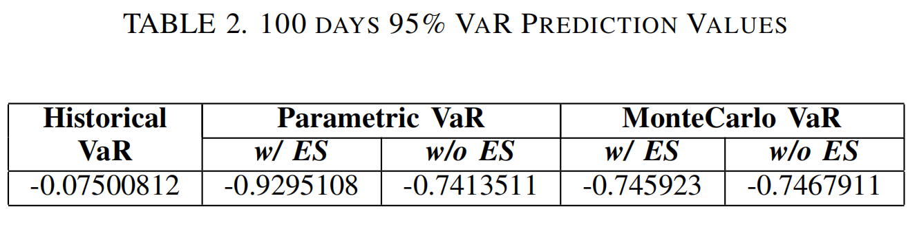
For the longer-term VaR prediction, such as one year, we tend to Monte Carlo Simulation with larger data and calculation. Figure (f) uses 100,000 times Monte Carlo simulations based on taking random samples to predict the total market cap of BTC in 2020. The prediction starts from Feb 1 2020 until Dec 30 2020 with using historical data between Jan 1 2019 and Feb 1 2020. Figure (g) shows the simulated final market cap value follows a lognormal distribution. Finally we obtain a final VaR value, 52100908448.21777, which means we have 90% confidence that the total market cap of BTC would not be less than 203518097739.78223 in the end of 2020 (the total market cap on Feb 1 2020 is 255619006188.0).
4.2. Loss Distribution and Survival Analysis
VaRs in the first part guide us to set different security level LMR (Liquidation Mortgage Rate) for the stablecoin system according to the dynamic market risks. With the help of Markov Chain model, we can quantify the survival probability of loans under different LMR. Figure (h) shows the different survival probability distribution of three kinds of LMR, and we can find loans with lower LMR have a larger probability to be liquidated after 100 days. Similar with LMR, Stabilization Fee Ratio (SFR) also affect the survival probability of loans, the higher SFR the more loans liquidated. Further we can estimate the loss frequency (the number of liquidated loans) distribution. Meanwhile in combination with the loss severity (the amount of loss) distribution based on lognormal-GPD distribution, we can obtain the potential loss distribution of the system in the future due to market risks and internal operational risks, as showed in Figure (i).
5. Conclusion
We establish a mature and systematic risk management system MovER for decentralized finance. Especially for stablecoin ecosystem, MovER can provide all-round financial parameters guidance. And in our view, this risk measure methodology should be widely adopted by DeFi industry as soon as possible. Evaluation on two kinds of risks shows traditional risk measure tools and methods can also play an efficient effect on crypto-market risk prediction by proper utilization.
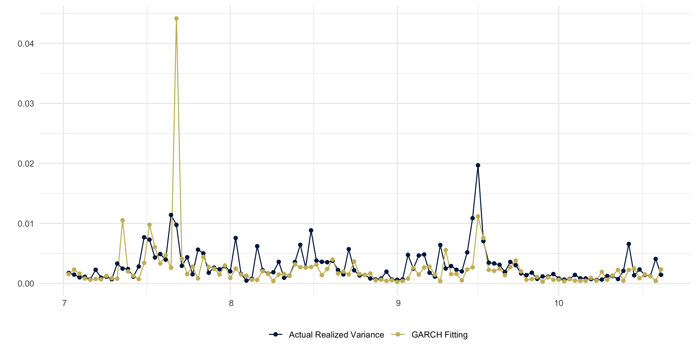 (a) 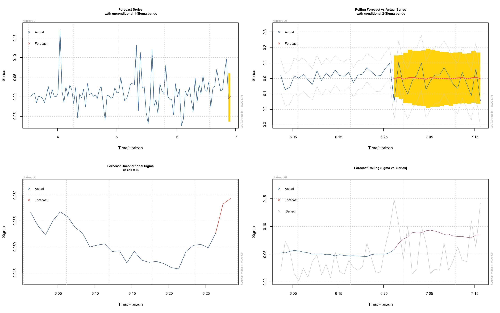 (b) 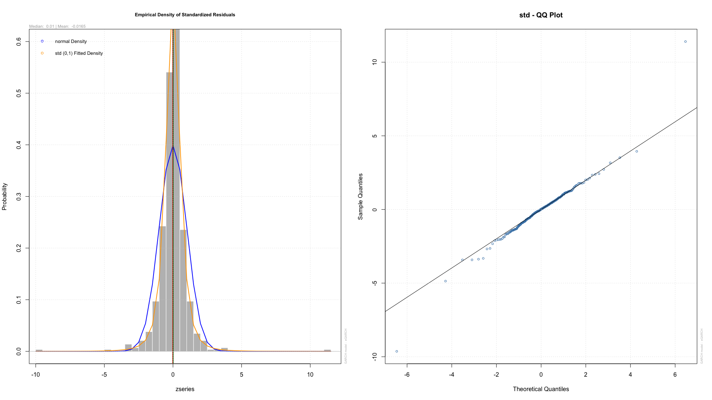 (c) 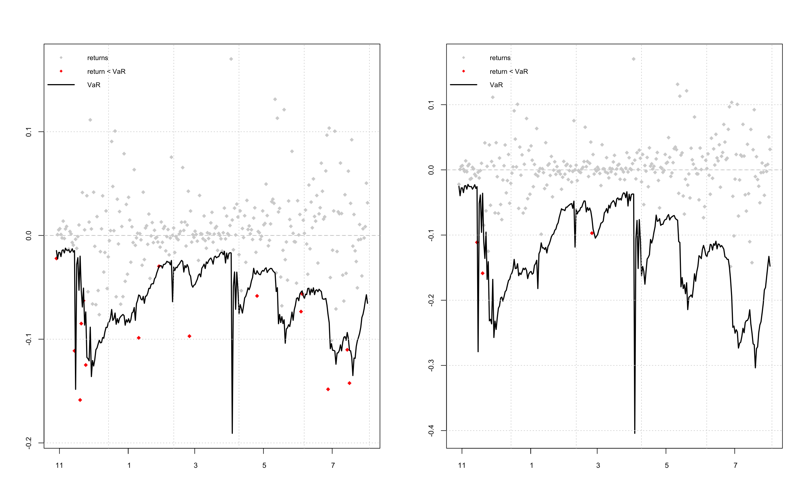 (d) (e) (f) (g) (h) (i)
Figure 4. Evaluation of external and internal risks: (a) (b) (c) (d) and (e) were done with selected GARCH models, showing the short-term prediction; (f) and (g) presented the macro-forecasting results of Monte Carlo simulations; (h) and (i) belong to Markov chain models, mainly describing the total loss distribution via simulating and complex distributions.
Acknowledgment
We thank Bytom Foundation, Yiqi Zhu, Zongcheng Li, Tianyu Dai, Kaiyuan Li, Yuxin Zhang, Zhuoheng Shen and anonymous reviewers for their many helpful comments.
References
[1] R. Jarrow, D. Lando and S. M. Turnbull, “A Markov Model for the Term Structure of Credit Risk Spreads,” Review of Financial Studies, vol. 10, no. 2, 1997.
[2] D. Lando, “Some Elements of Rating-Based Credit Risk Modeling,” 1999.
[3] R. P. Dobrow, “CONTINUOUS-TIME MARKOV CHAINS, Introduction to Stochastic Processes with R,” 1997.
[4] Kulkarni and G. Vidyadhar, “Modeling and analysis of stochastic systems, 1st ed.,” Chapman Hall, 1995.
[5] A. Evans, “A Ratings-Based Model for Credit Events in MakerDAO,” 2019.
[6] A. Frachot, et al, “Loss Distribution Approach for Operational Risk,” 2001.
[7] A. Bomfim, “Understanding Credit Derivatives and Related Instruments,” Waltham, 2016.
[8] N. Wang, “Setting Margins for Chinese Futures Markets Extreme Value Methods,” Postdoctor Station.
[9] P. Fabio, “R and Operational Risk,” UniCredit Operational Risk Methodologies and Control, 2012.
[10] R. Cont, “Volatility Clustering in Financial Markets: Empirical Facts and Agent-Based Models,” SSRN Electronic Journal, 2005.
[11] H. Li, X. Fan, et al, “Approaches to VaR,” 2012.
[12] J. Chu, S. Chan, et al, “GARCH Modelling of Cryptocurrencies,” J. Risk Financial Manag. 2017.
[13] V. Y. Naimy and M. R. Hayek, “Modelling and predicting the Bitcoin volatility using GARCH models,” IJMMNO, vol. 8, no. 3, 2018.
[14] T. Carlos, “Forecasting Bitcoin risk measures: A robust approach,” International Journal of Forecasting, 2019.
[15] O. Nieppola, “Backtesting Value-at-Risk Models,” Master’s Thesis, 2009.
[16] J. Anirudh, “Estimating and Evaluating the Stochastic Volatility Model for Bitcoin,” 2017.